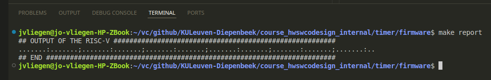
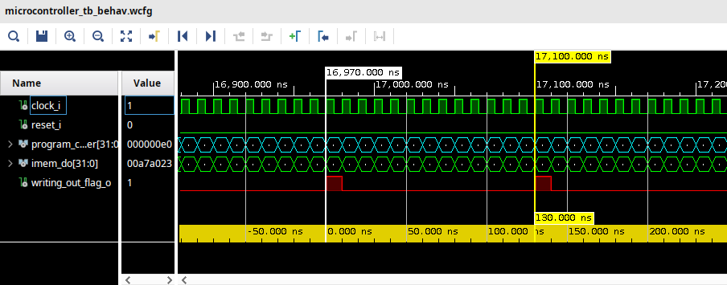
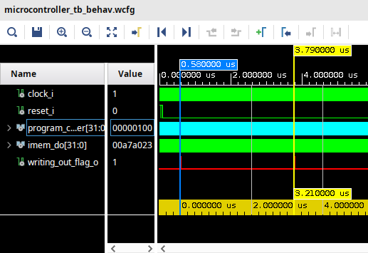

A typical microcontroller has a timer. Although this is a fairly basic component, it has many useful applications. Therefore, adding a timer to your RISC-V implementation is the first extension that will be made.
The exercise could be: Print out a dot every microsecond, print a colon on the 8th and a semi-colon on every 16th. The expected output from such a program would look like: …….:…….;…….:…….;…
The first way of making a solution for this exercise can be to make it in software.
A counter increments every loop. If the 4 LSBs are zero, it divisable by 16. In the other case when 3 LSBs are zero, it is divisable by 8 and for all other cases, the default character can be printed. The image below shows the output of this program and it indeed shows what was requested.

BUT … what with the timing?
#include "print.h"
void main(void) {
unsigned int i;
for(i=1;i<1000;i++) {
if((i & 0xF) == 0) {
print_chr(';');
} else if((i & 0x7) == 0) {
print_chr(':');
} else {
print_chr('.');
}
}
while(1);
}
With inspecting the waveforms of the simulation the time between subsequent writes can be measured. With 130 ns the RISC-V implementation is too quick to meet the timing requirements of the exercise.

The C-code can be altered so there is wait statement.
Note that the variable i is declared as a volatile variable. It implies that the value of this variable can be altered by another source. This results in not having the compiler optimise this part away.
With the wait-loop iterating 50 times, the duration between subsequent writes increases to 3210 ns. 
#include "print.h"
void wait(void) {
volatile unsigned int i;
for(i=0;i<50;i++);
}
void main(void) {
unsigned int i;
for(i=1;i<1000;i++) {
if((i & 0xF) == 0) {
print_chr(';');
} else if((i & 0x7) == 0) {
print_chr(':');
} else {
print_chr('.');
}
wait();
}
while(1);
}
If the wait-loop is iterated 25 times, the duration drops again to 1710 ns. Because there is a linear relation ship between the number of loop iterations (x) and the duration (y) (y = a*x + b) and two samples are known, the duration can be calculated like this: y = 60*x+210. When targeting a duration of 1000 ns (y=1000), x can be calculated to be 13.1666. Given only integers can be used, this would introduce an error of 10 ns = 1000 ns - 990 ns.